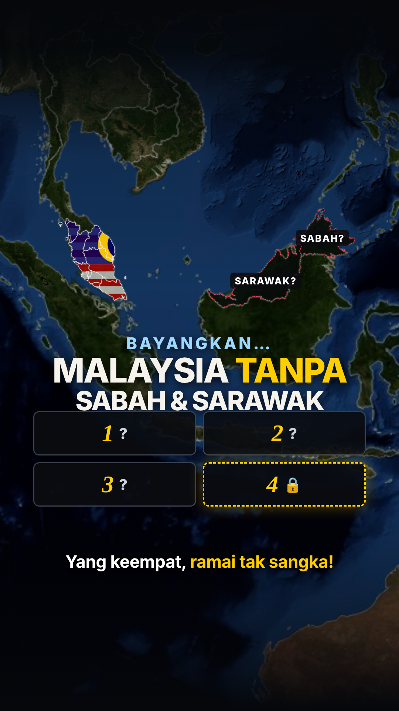
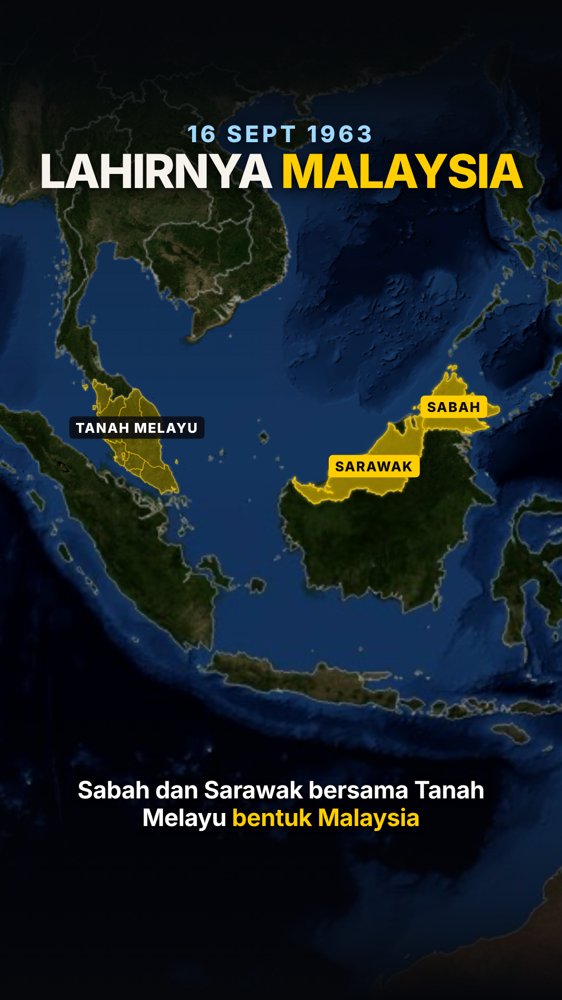
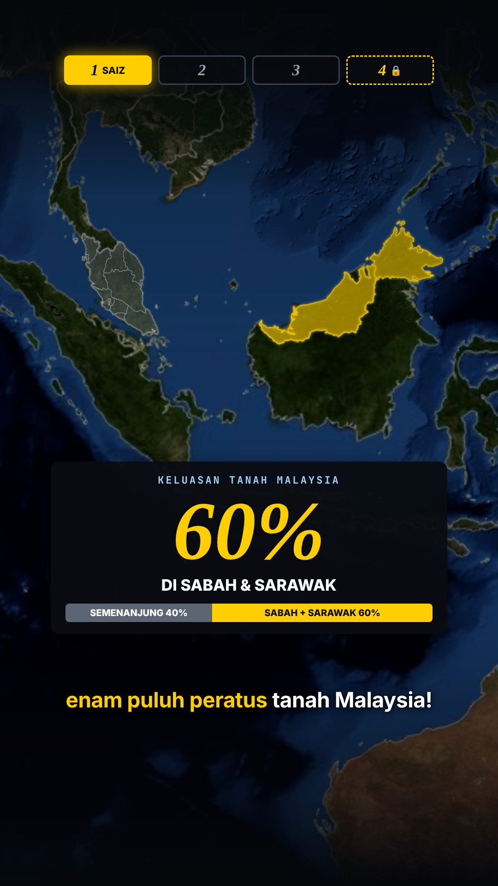
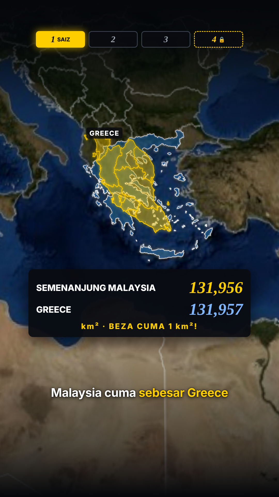
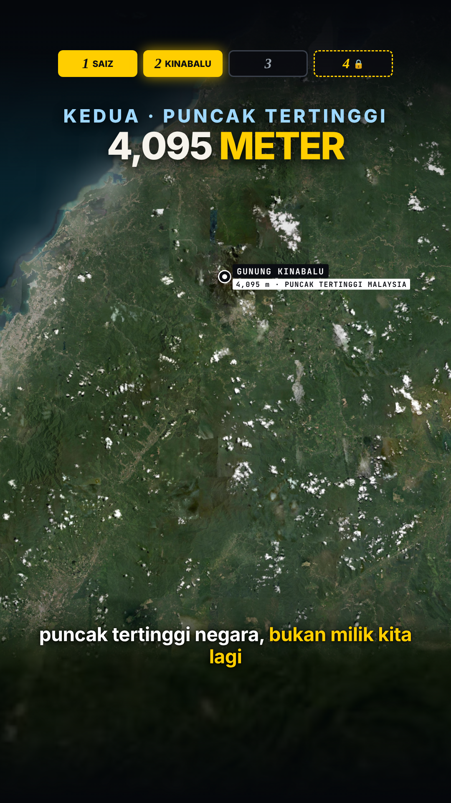
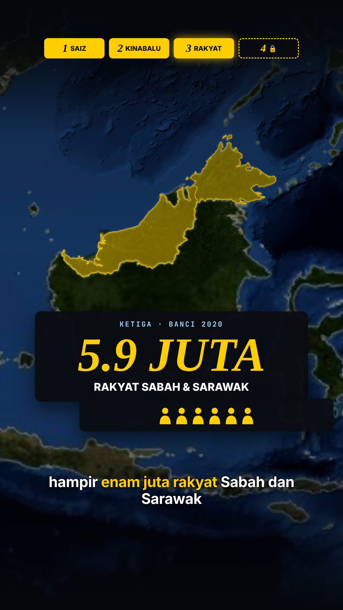
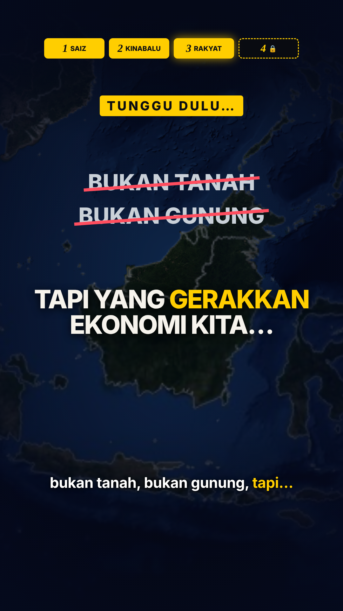
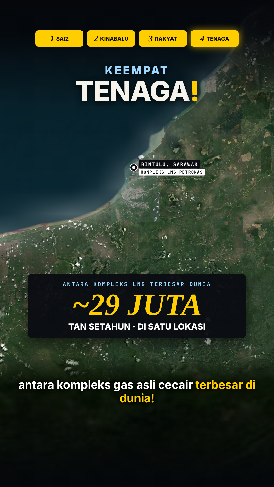

01 · 0:00
Hook + open loop
"Bayangkan, Malaysia tanpa Sabah dan Sarawak… Ada empat benda besar yang kita akan hilang. Yang keempat, ramai tak sangka!"
Sabah dan Sarawak gelap dengan garis putus merah. Kotak 1 · 2 · 3 · 4🔒 keluar, dan kotak ke-4 berkunci, bersinar.

02 · 0:09
1963
"Tahun 1963, kita bersatu jadi Malaysia. Tapi kalau tak?"
Tiga wilayah menyala emas. 16 SEPT 1963 · LAHIRNYA MALAYSIA.

03 · 0:14
#1 Saiz
"Pertama, saiz. Sabah dan Sarawak ialah 60% tanah Malaysia!"
Penanda atas: 1 SAIZ menyala. Borneo emas, kad 60%.

04 · 0:19
Sebesar Greece
"Tanpa mereka, Malaysia cuma sebesar Greece."
Semenanjung dipindah atas Greece pada saiz sebenar. 131,956 lawan 131,957 km².

05 · 0:24
#2 Kinabalu
"Kedua, Gunung Kinabalu, 4,095 meter, puncak tertinggi negara, bukan milik kita lagi."
2 KINABALU menyala. Zoom ke Kinabalu (imej tajam), 4,095 METER.

06 · 0:31
#3 Rakyat
"Ketiga, hampir enam juta rakyat Sabah dan Sarawak, bukan lagi rakyat Malaysia."
3 RAKYAT menyala. Kad 5.9 JUTA (banci 2020).

07 · 0:37
Re-hook
"Tapi tunggu dulu! Yang keempat ni, bukan tanah, bukan gunung, tapi benda yang gerakkan ekonomi kita…"
Muzik berhenti, flash, kotak 4🔒 bergegar. BUKAN TANAH ✕ dan BUKAN GUNUNG ✕ dipangkah satu-satu.

08 · 0:44
#4 Tenaga
"Tenaga! Di Bintulu, ada antara kompleks gas asli cecair terbesar di dunia!"
Kunci pecah, 4 TENAGA menyala. Zoom laju ke Bintulu, kad ~29 JUTA TAN SETAHUN.

09 · 0:51
CTA
"Jadi kau rasa, tanpa Sabah dan Sarawak, apa yang Malaysia paling rasa hilang? Komen kat bawah!"
Malaysia penuh berbendera. Empat pilihan: SAIZ · KINABALU · RAKYAT · TENAGA, dan KOMEN ↓.